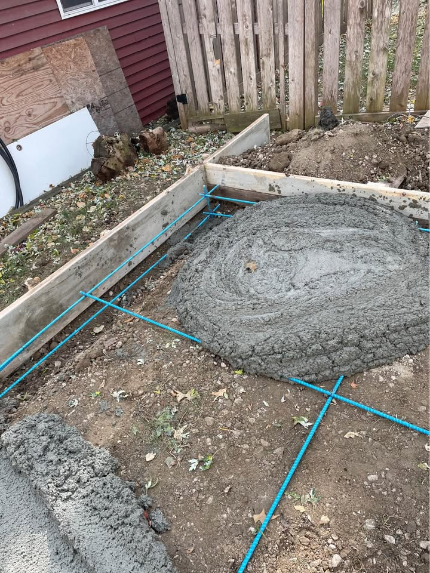

Driveway Installation
Explore other flatwork projects where grading and prep matter.
Concrete slabs for sheds, shops, garages, and utility buildings should be planned around thickness, load, drainage, and soil movement. Call, text, or request a quote from the homepage.

Utility slabs vary a lot depending on whether they will support a shed, shop, garage, or heavier equipment. Thickness, reinforcement, and sub-base prep should fit the actual use instead of assuming every slab project is the same.
Even a simple pad can get more complicated if access is tight, grading is uneven, or the slab needs to tie into an existing structure. Asking about those items early can make quotes more useful.
Explore other flatwork projects where grading and prep matter.
Compare full tear-out and rebuild planning factors.
Review repair questions for worn or damaged existing slabs.